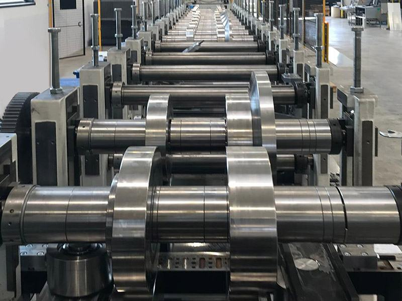

Dall'idea alla macchina che produce.
Progettiamo macchine e impianti, li verifichiamo con l'analisi FEM, industrializziamo prodotti in lamiera e consegniamo impianti chiavi in mano. Studio di ingegneria a Vittorio Veneto (TV).
Ricostruzione 3D di una linea di profilatura: il nastro forato diventa un profilo a C, una stazione alla volta.
- Dal 2019 a Vittorio Veneto, in provincia di Treviso
- Tecnici e ingegneri in un unico team interdisciplinare
- Solo il progetto o l'impianto chiavi in mano
- Montaggio seguito presso il tuo stabilimento
Prima sullo schermo, poi in officina.
Ogni macchina nasce come modello 3D. Poi la seguiamo nella costruzione e nel montaggio, fino a quando lavora. Alcuni progetti dal nostro archivio.
Sullo schermo modelli e rendering di progetto
In officina macchine costruite e al lavoro
Cinque stazioni. Entri da quella che ti serve.
Come in una linea di profilatura, ogni passaggio dà forma al progetto. Puoi affidarci tutto il percorso o un passaggio solo, anche come ufficio tecnico conto terzi.
-
Consulenza aziendale
Prima di investire, mettiamo in fila i numeri.
Organizzazione aziendale, calcolo dei costi di produzione, gestione dei magazzini e dei processi operativi. Ti affianchiamo anche nella scelta degli investimenti produttivi: macchinari, impianti e magazzini automatici.
-
Ingegneria e progettazione
Macchine e impianti disegnati sulle tue esigenze reali.
Progettazione conto terzi completa e cucita sul tuo processo. L'obiettivo è un vantaggio che si misura: più produttività, costi più bassi, prodotti di qualità migliore.
-
Verifiche dimensionali, analisi FEM e simulazioni
Prima di tagliare l'acciaio, lo mettiamo sotto sforzo al computer.
L'analisi FEM simula come si comporta una struttura complessa sotto qualsiasi sollecitazione. Serve a:
- individuare le zone più sollecitate e i possibili punti di rottura
- scegliere il materiale e gli spessori giusti
- conoscere i valori massimi di sollecitazione e deformazione
- valutare gli spostamenti causati dai carichi
-
Industrializzazione prodotti
Da un'idea a un prodotto che si costruisce al costo giusto.
Partiamo da un'idea o da una semplice esigenza e, dopo un'analisi attenta, troviamo le soluzioni tecniche, produttive e commerciali più adatte: il prodotto si realizza, o si trova sul mercato, al minor costo possibile e nel rispetto delle specifiche di qualità. Forniamo anche direttamente prodotti in lamiera e carpenteria.
-
Fornitura di macchine e automazioni
Impianti chiavi in mano, montati nel tuo stabilimento.
Forniamo impianti completi chiavi in mano, oppure realizziamo solo il progetto. In tutti e due i casi seguiamo la costruzione e il montaggio presso di te.
Hai un progetto a metà strada, o solo un'idea?
Raccontaci il progetto
Chi siamo
Il nostro viaggio inizia con la passione per la meccanica.
KVM Engineering è un team interdisciplinare di tecnici e ingegneri di provata esperienza. Progettiamo e realizziamo sistemi industriali su misura, dalla consulenza all'impianto installato, con una rete di collaboratori che copre ogni disciplina.
Usiamo tecniche di prima scelta, rispettiamo i più rigorosi standard di sicurezza e lavoriamo per un risultato: impianti efficienti e sostenibili, che restano produttivi nel lungo termine.
Raccontaci il progettoRaccontaci il progetto.
Un'idea da sviluppare, un pezzo da industrializzare, una macchina da progettare o da verificare: scrivici cosa ti serve. Se hai disegni, foto o file CAD, potrai allegarli all'email.
0438 684 697- Sede
- Largo Cavallotti 5
31029 Vittorio Veneto (TV) - Orari ufficio
- [DA CONFERMARE]
- KVM Engineering